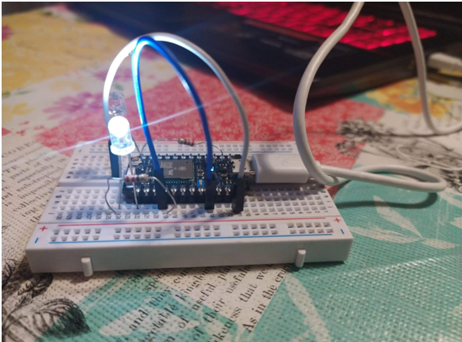

IoT with Photon
The objective of the laboratory was to introduce the student to the concept of the Internet of Things, through various practical exercises with real equipment and services. To do this, Particle's Photon commercial platform was released, which provides hardware to integrate real-world “things”, and a cloud backend to connect with and manage these devices, and a web API for simple application development.
The laboratory was divided into several sections that explore concepts of basic programming, integration of sensors and actuators, and communications.

The laboratory included among others:
- SOS in Morse. Realisation of a program that emits an SOS in Morse code through the RGB of the board.
- Twilight switch. Twilight switch is an automatic control element for lighting, which activates the connected load when the lighting drops below a threshold. It can be used to turn on street lighting, garden lights or shop signs once the ambient lumen level drops below a minimum.
- Notification Centre. In this project the Photon shows with a blinking colour in RGB receipt of a mail/tweet/post. The colour varies depending on the associated service. For example, having a blue flash for Facebook and a red flash for Gmail, and receiving notifications from both, the Photon flashes one colour and then the other. For this, the Particle functions are used as “action” in IFTTT.
- External Dashboard against Particle Cloud. In this project the Photon reads the photoresistor and offers it to the Particle Cloud as a VARIABLE. Subsequently, on the freeboard.io website, a JSON-type “Datasource” is added and the Particle Cloud API call is made to obtain the value of the photoresistor. Finally, a dashboard of the available panels is created to show the photoresistor information.
This project forms a part of a curse given in Polytechnic University of Valencia.